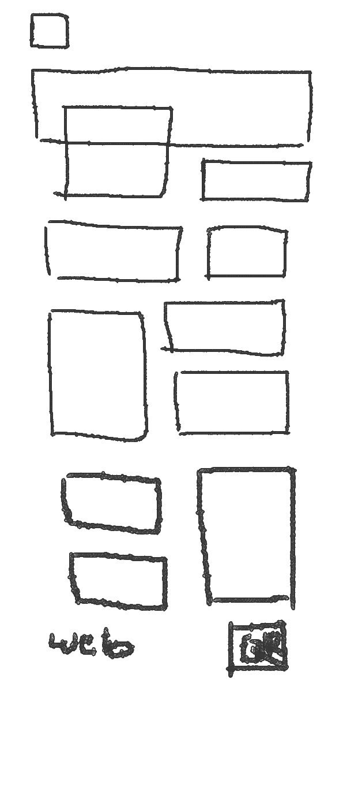
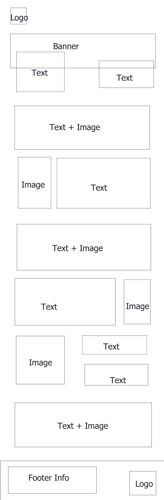

First draft of media screen when minimized
After adding in the content for my page, I relized that putting three boxes in a row makes it hard to put information inside them without it going out of the flexbox. So I changed it to 2 boxes per row instead. I also decided to include the navigation to external websites at the top making it easier for people to click on instead of putting it at the bottom as a link and QR code.
I decided to design my website based off a game I play called Genshin Impact and chose one of the past event, Lantern Rite, to write about.